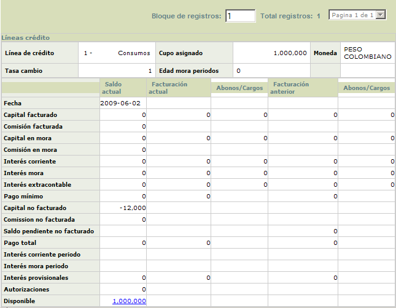

Saldos por línea de crédito |
En este formulario que se invoca desde el detalle consulta de la tarjeta, en el hipervínculo información básica, saldos la entidad puede consultar la información acerca de los saldos de la tarjeta presentados para cada una de las diferentes líneas de crédito asignadas a la tarjeta.
La cantidad que se muestra en el campo 'Bloque de registros', ubicado en la parte superior derecha del formulario, indica la cantidad de líneas de crédito que se encuentran asociadas con la tarjeta consultada.
Además de las tres columnas que indican las fechas a las que corresponde la información despelgada, se muestran otras dos columnas denominadas abonos / cargos que contienen la afectación de saldos que presentaron los diferentes conceptos de una fecha a otra.

Descripci�n de campos
| Línea de crédito |
Campo que muestra el código y descripción de la línea de crédito a la que pertenece la información desplegada en el formulario. |
|
Cupo asignado |
Muestra el monto asignado a la tarjeta como cupo para la línea de crédito respectiva. |
|
Moneda |
Este campo indica la moneda en la que se encuentra denominada la línea de crédito de la tarjeta. |
| Tasa cambio |
Campo que muestra el valor de la tasa de cambio para la moneda en la cual se encuentra denominada la línea de crédito. |
|
Edad mora periodos |
Este campo muestra la altura actual de mora que presenta la tarjetas de acuerdo con los saldos de facturaciones anteriores que no han sido cubiertos por el cliente a la fecha. |
|
Fecha |
Campo que muestra la fecha actual de proceso, de la última facturación de la tarjeta y de la facturación anterior (penúltima) para indicar a cual de ellas corresponde la información desplegada. |
Capital facturado |
Muestra el monto del capital diferido cobrado al cliente dentro del pago mínimo por las transacciones asociadas a la línea consultada. |
Comisión
facturada |
Campo que señala el monto de las comisiones cobradas al cliente dentro del pago mínimo para las transacciones de la línea. |
Capital
mora |
Indica el monto de capital no cubierto por el cliente en las facturaciones anteriores correspondiente a transacciones asociadas a la línea de crédito. |
Comisión
mora |
Este campo indica el monto de las comisiones no cubiertas por el cliente en las facturaciones anteriores por transacciones pertenecientes a la línea. |
Interés
corriente |
Despliega el monto del interés de financiación que la entidad le cobra el cliente por los saldos pendientes a la fecha sobre los consumos efectuados que afectan a la línea de crédito. |
Interés
mora |
Campo que muestra el monto de los intereses de sanción generados por la entidad sobre las porciones de capital no cubiertas por el cliente en facturaciones anteriores por transacciones pertenecientes a la línea. |
Interés
extracontable |
En este campo se indica el monto de los intereses que de acuerdo con la altura de mora o la calificación de la tarjeta, se deben causar sobre los saldos de la tarjeta sobre las transacciones asociadas a la línea. |
Pago
mínimo |
Campo que indica el monto que por concepto de las transacciones asociadas a la línea de crédito, el actor debe cancelar para cubrir la obligación y no incurrir en mora. |
Capital
no facturado |
Muestra el monto de los consumos diferidos que se encuentran pendientes de facturar y no han sido incluidos aún dentro del pago mínimo por las transacciones pertenecientes a la línea. |
Comisión
no facturada |
En este campo se indica el monto de las comisiones que aún no han sido incluidas dentro del pago mínimo de la tarjeta y correspondientes a transacciones asociadas con la línea consultada. |
Saldo
pendiente no facturado |
Campo que indica el monto a cargo del cliente y que por efectos de ajustes y otro tipo de eventos se encuentra pendiente de ser facturado y cobrado de acuerdo con las transacciones pertenecientes a la línea. |
Interés corriente periodo |
Indica el monto de los intereses de financiación que la entidad cobra por los consumos efectuados que afectaron directamene a la línea y generados desde la última facturación hasta la fecha actual de proceso, intereses que no están incluidos en el pago mínimo. |
Interés mora periodo |
Campo que muestra para las transacciones asociadas a al línea el monto de los intereses de sanción generados por la entidad sobre las porciones de capital no cubiertas por el cliente en facturaciones anteriores y generados desde la más reciente facturación hasta la fecha actual de proceso, los cuales no se encuentran incluidos dentro del pago mínimo. |
Pago
total |
Este campo contiene el valor total adeudado por el cliente a la entidad como resultado de las utilizaciones y consumos hechos con la tarjeta sobre transacciones asociadas a la línea consultada. |
Interés
provisional |
Despliega el monto de los intereses calculados de manera provisional sobre transacciones asociadas a la línea que tengan la condición de condonar intereses el primer mes, de acuerdo con lo definido en transacciones por empresa. |
Autorizaciones |
Este campo señala el monto de las autorizaciones o aprobaciones otorgadas por la entidad sobre transacciones asociadas a la línea de crédito y que se encuentran vigentes o sin cruzar. |
Disponible |
Campo que aplica solo para la columna 'Actual' y en el que se muestra el valor del cupo de la línea de crédito que puede ser utilizado por el cliente para efectuar consumos. |